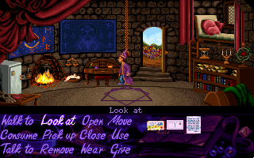

名稱：魔法師西蒙1／頑皮法師1 (Simon the Sorcerer，英文版) 簡介：Adventure 1993年出品的冒險解謎遊戲，由Infocom代理發行 [待補]。
備註：本版為DOS磁片版（1993//10/11版，另保存1993/9/23版） 保護：光碟版為無保護，磁片版為圖案密碼，破解碼： TABLES05 32 9C 87 44 00 01 00 00 01 98 FF 00 00 9C 32 99 (1993/10/11版) 3F -- -- -- -- -- -- -- -- -- -- -- -- -- 3F -- 或 32 9C 87 44 00 01 00 00 01 96 FF 00 00 9C 32 99 (1993/9/23版) 3F -- -- -- -- -- -- -- -- -- -- -- -- -- 3F -- 備註：本遊戲有1994年DOS版與2002年Windows版等兩種光碟。 備註：磁片版有字幕，但光碟版只有語音沒有字幕，英文聽力不好者勿用。 檔案：simon-cd.rar = DOS光碟版 simon-win.rar = Windows光碟版